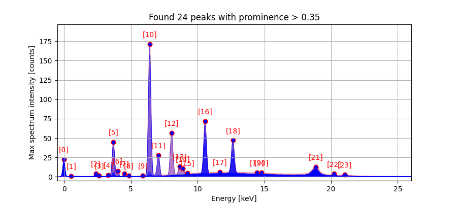
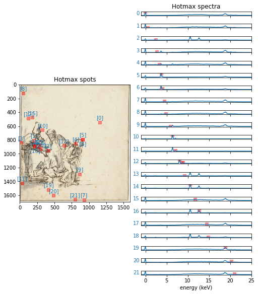
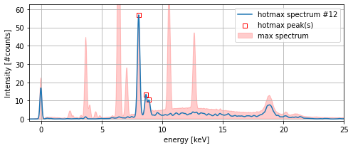
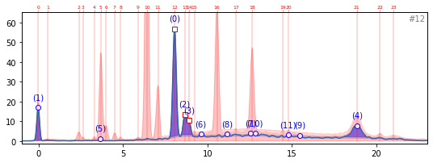

from maxrf4u import compute_hotmax_spectraHotmax spectra
Cherry picking the best spectra
A MA-XRF spectral image data cube contains typically a million spectra or so. Far too many to analyze them individually! Furthermore, most of these spectra have low signals and are rather noisy. An approach to overcome these computational problems is to base a further data analysis solely on the max spectrum. Such an approach is used e.g. by DataMuncher developed by Matthias Alfeld. As discussed above, the max spectrum essentially is an envelope function that provides a highly informative summary of all spectra. Different peaks in the max spectrum envelope can originate from from different spatial positions in the spectral image. Although this mathematical combination of spectral signals reduces computational analysis time, down the road it complicates our task of unmixing spectra and attribution of specific peak patterns to different chemical elements.
Locating the hotmax pixels and spectra
A more sophisticated approach is to locate for each peak in the max spectrum envelope which specific pixel spectrum is responsible for that specific peak. Loosely speaking, which pixels in the spectral image data cube are ‘hotmax’? Another way to explain this is to find the specific ‘hotmax’ spectra that touches the corresponding max spectrum peaks.
A requisite step in the data analysis now is to find the hotmax pixels and spectra. Locating them takes a few minutes, and should be done once using the get_hotmax_spectra() function. The user is prompted to inspect and save the result in the datastack file.
compute_hotmax_spectra('RP-T-1898-A-3689.datastack')
..

In further analysis our stored hotmax spectra, spots and peak indexes can now be accessed from file using the DataStack.read(<datapath>) and DataStack.read_list(<datapath>) methods.
from maxrf4u import DataStackds = DataStack('RP-T-1898-A-3689.datastack')
x_keVs = ds.read('maxrf_energies')
hotmax_spectra = ds.read('hotmax_spectra')
hotmax_spots = ds.read('hotmax_spots')
hotmax_peak_idxs_list = ds.read_list('hotmax_peak_idxs_list')To get an idea, let’s plot both the spatial (x, y) locations of the hotmax spots on the image of the drawing, and their corresponding hotmax spectra.
Code
import matplotlib.pyplot as plt
from maxrf4u.peakmaps import _add_hotlines_ticklabelsCode
y, x = hotmax_spots.T
im = ds.read('imvis_reg_highres')
extent = ds.read('imvis_extent')
fig = plt.figure(figsize=[7, 8], constrained_layout=True)
grid = plt.GridSpec(22, 2, figure=fig)
ax = fig.add_subplot(grid[0:22, 0])
ax.imshow(im, extent=extent)
ax.scatter(x, y, alpha=0.4, color='r', marker='s');
ax.set_title('Hotmax spots')
axs = []
for n, spectrum in enumerate(hotmax_spectra):
ax1 = fig.add_subplot(grid[n, 1])
axs.append(ax1)
ax1.plot(x_keVs, spectrum)
peak_idxs = hotmax_peak_idxs_list[n]
ax1.scatter(x_keVs[peak_idxs], spectrum[peak_idxs], alpha=0.4, color='r', marker='s')
ax1.set_xlim([-1, 25])
ax1.set_yticks([])
# label
ax1.text(-0.015, 0.5, f'{n}', c='C0', ha='right', va='center', transform=ax1.transAxes)
axs[0].get_shared_x_axes().join(*axs)
# hack to suppress ticklabels in upper plot
# https://stackoverflow.com/questions/4209467
# matplotlib-share-x-axis-but-dont-show-x-axis-tick-labels-for-both-just-one
for ax1 in axs[0:-1]:
plt.setp(ax1.get_xticklabels(), visible=False)
axs[0].set_title('Hotmax spectra')
axs[-1].set_xlabel('energy (keV)')
for i, xy in enumerate(zip(x, y)):
# hack to avoid overlapping labels
xytext = [0, 6]
if i == 6:
xytext = [0, -12]
if i == 16:
xytext = [0, -12]
ax.annotate(f'[{i}]', xy, xytext=xytext, color='C0', textcoords='offset points', ha='center')
..

Now let’s pick one of the 22 hotmax spectra and take a closer look. Each hotmax spectrum has one or more peaks (square red marker) that correspond to specific peaks in the the max spectrum envelope.
Code
ds = DataStack('RP-T-1898-A-3689.datastack')
hotmax_spectra = ds.read('hotmax_spectra')
hotmax_peak_idxs_list = ds.read('hotmax_peak_idxs_list')
x_keVs = ds.read('maxrf_energies')
y_max = ds.read('maxrf_maxspectrum')
n = 12
spectrum = hotmax_spectra[n]
idxs = hotmax_peak_idxs_list[n]
peaks_x = x_keVs[idxs]
peaks_y = spectrum[idxs]
fig, ax = plt.subplots(figsize=[7, 3])
ax.plot(x_keVs, spectrum, label=f'hotmax spectrum #{n}')
ax.scatter(peaks_x, peaks_y, edgecolor='r',
marker='s', facecolor='w', label=f'hotmax peak(s)')
ax.fill_between(x_keVs, y_max, color='r', alpha=0.2, label='max spectrum')
ax.set_xlabel('energy [keV]')
ax.set_ylabel('Intensity [#counts]')
ax.set_ylim(-1, 1.1*spectrum.max())
ax.set_xlim(-1, 25)
ax.grid()
ax.legend();
plt.tight_layout()
..

The measured spectrum consists of a a slowly varying baseline, the so-called the continuum ridge, with peaks added on top. Some of these peaks are caused by x-ray fluorescence of specific chemical elements or Other peaks are just noise. The difficulty with these kind of spectra is that the noise level varies with the signal according to Poisson statistics. The variance of noise is linearly proportional to the signal level. For this reason, we observe more noise on top of the continuum ridge.
In order to distinguish significant peaks from noise it is possible to estimate a baseline with a noise envelope for the hotmax spectra with the compute_hotmax_noise()function. The algorithm used in estimating the baseline function is the rolling ball filter. In accordance with Poisson statistics, the noise level is estimated as a square root function of the baseline level.
from maxrf4u import compute_hotmax_noisecompute_hotmax_noise('RP-T-1898-A-3689.datastack')Ready computing 22 noise envelopes.
Write hotmax baselines and noiselines to datastack file [y/n]? nGiven the computed noise envelope for each spectrum we are now ready to locate potentially significant peaks with the compute_subpeaks() function and save their locations to the datastack file.
from maxrf4u import compute_subpeakscompute_subpeaks('RP-T-1898-A-3689.datastack');Write hotmax baselines and noiselines to datastack file [y/n]? nWe can now create a HotmaxAtlas object to plot all spectra with their noise envelopes and sub peaks with the HotmaxAtlas.plot_spectra() method.
from maxrf4u import HotmaxAtlashma = HotmaxAtlas('RP-T-1898-A-3689.datastack')
#hma.plot_spectra()Or we can plot a single spectrum with HotmaxAtlas.plot_spectrum(<nr>) to inspect a specific hotmax spectrum.
hma.plot_spectrum(12);
..

Each specific chemical element present is known to cause a specific peak pattern. Now we need to solve the inverse problem, which I call ‘the peak pattern puzzle’. Given a spectrum, which combination of elements is likely to have caused the combination of peaks we find in the spectrum? This is the topic of the next section…
FUNCTIONS
compute_subpeaks
compute_subpeaks (datastack_file, prominence=0.2)
Find subpeaks in hotmax spectrum that exceed the noise envelope.
Writes result to datas
Returns: list of hotmax sub peak indices
compute_hotmax_noise
compute_hotmax_noise (datastack_file, radius=200, alpha=0.6, beta=0.1)
Utility function to get baselines and noiselines from hotmax spectra in datastack_file.
Use once to compute base noise envelopes. Ask user confirmation for saving result to datastack file.
compute_hotmax_spectra
compute_hotmax_spectra (datastack_file, prominence=0.35)
Collect hotmax pixels and corresponding spectra from datastack_file.
Ask user confirmation for saving result to datastack file.
HotmaxAtlas
HotmaxAtlas (datastack_file, prominence=0.2)
Initialize self. See help(type(self)) for accurate signature.